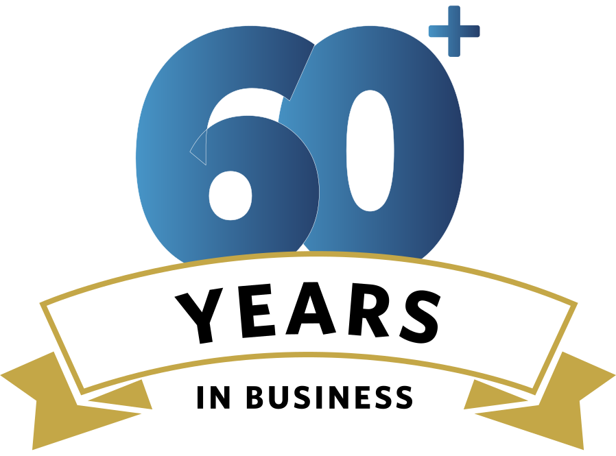
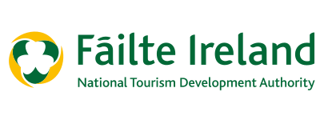
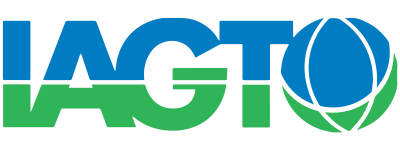
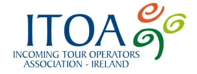
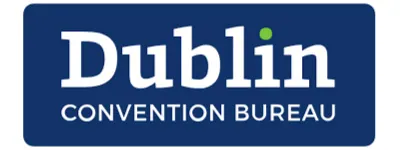
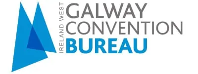
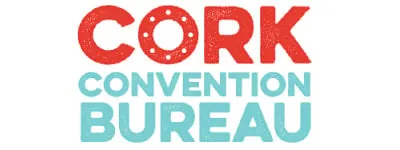
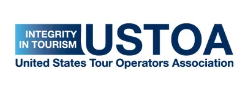
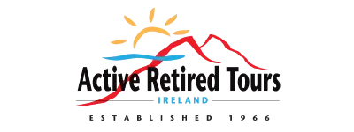

DMC Irlandais depuis 1966.
Joe O'Reilly Ireland DMC est la société de gestion de destinations indépendante et familiale la plus ancienne d'Irlande.
Le groupe Joe O'Reilly est notre DMC en Irlande depuis 17 ans et nous ne pouvions pas demander un meilleur partenaire. Les niveaux de service et d'attention incroyablement élevés qu'ils fournissent - à chaque tournant - nous donnent l'impression d'avoir notre propres bureaux (et propres collègues) à Dublin et Cork. Les problèmes sont anticipés et résolus avec le bien-être de nos clients toujours au premier plan. Bernard, Ann et tous les membres de l'équipe nous ont procuré un plaisir immense de travailler avec eux et nous attendons avec impatience de vivre encore 17 belles années ensemble!

Célébrons plus de 60 ans d'activité
En tant que DMC le plus ancien, indépendant et familial d'Irlande, personne ne connaît l'île d'Irlande mieux que nous. Avec des bureaux à Dublin et à Cork, nous offrons la meilleure qualité de visite, de prix et d'assistance de tous les DMC irlandais.
Fondée en 1966 par Joe O'Reilly (1932-2007), un visionnaire du tourisme irlandais, JOR Ireland DMC est aujourd'hui dirigée par son fils Bernard. Cela fait de nous la société de gestion de destinations indépendante la plus ancienne et la plus prospère de l'île d'Irlande.
Nos partenaires







Nos différents services en tant que DMC
Depuis 1966, nous accueillons des visites de groupes en Irlande du monde entier - et personne ne connaît mieux l'Irlande. Contrairement à d'autres DMC, nous prenons le temps de vous écouter et de travailler en étroite collaboration avec vous pour assembler quelque chose de vraiment spécial pour vos invités.
Les meilleures expériences irlandaises de guides locaux, conduits dans des autocars de luxe, séjournant dans des hôtels bien situés.
Le meilleur partenaire M.I.C.E spécialisé dans la meilleure destination M.I.C.E sur terre. Depuis 60 ans, nous sommes passionnés par les événements d'entreprise en Irlande et par la façon dont nous les organisons. Nous avons un concept unique que nous appelons F.O.B.I.C. – Flexible, Original, Budget, Imagination. La créativité.
Tous ces éléments combinés garantissent que vous vous retrouverez avec un programme simplement « Wow » pour votre client et nous serons à vos côtés tout au long du processus.
Quel meilleur endroit au monde pour planifier votre séjour golf que l'île d'Irlande, qui abrite plus d'un tiers de tous les parcours de golf dans le monde. Et avec nous, vous serez pris en charge par l'équipe qui a dirigé l'entourage de M. Arnold Palmer pendant la Ryder Cup.
Pourquoi s'arrêter au golf ? Nous offrons la possibilité de construire votre voyage autour de centaines d'expériences irlandaises authentiques, y compris des programmes pour les non-golfeurs. Avec nous, vous pourrez visiter des pubs locaux et apprendre à préparer un café irlandais. Profitez de visites privées de brasseries, de musées, et plus encore.
Nous avons la chance d'avoir ici en Irlande certaines des propriétés les plus spectaculaires, à la fois privées et publiques. Ceci, associé à notre merveilleuse hospitalité irlandaise et à nos paysages époustouflants, garantit que vos invités seront plus qu’enchantés.
Si vous recherchez un itinéraire ultra-luxe, vous ne trouverez pas mieux que JOR Luxury FIT pour vous le fournir.
Depuis le lancement de la première Académie internationale d'équitation d'Irlande en 1975, JOR Ireland propose des itinéraires équestres créatifs, avec des activités uniques non disponibles chez d'autres opérateurs.
Profitez de voyages sur mesure pour adultes et familles, adaptés exclusivement à votre groupe.
L'Irlande est depuis longtemps l'une des grandes équipes internationales du rugby. Au cours des 55 dernières années, notre entreprise a forgé et développé des liens très étroits avec l'Irish Rugby Football Union et de nombreux clubs locaux.
Grâce à ces contacts privilégiés nous avons la chance d'avoir accès aux billets et à l'hospitalité. Nous accueillons également des équipes venues de l'étranger, installons, et créons des itinéraires amusants et attrayants pour votre groupe.

A.R.T.I (Active Retired Tours Ireland) est une entreprise que nous avons développée il y a de nombreuses années pour répondre aux besoins des groupes de personnes retraitées mais toujours actives. Nous avons pris en charge des centaines de groupes localement. Nous écoutons quels sont leurs intérêts et livrons un itinéraire sur mesure en veillant à ce que chaque demande soit prise en compte.
Nous sommes fiers du merveilleux chauffeur-guide que nous avons et qui agit en tant que guide pendant toute la durée de la visite.
Pourquoi choisir Joe O'Reilly Ireland DMC?
Joe O'Reilly Ireland DMC offre la meilleure qualité de tournée, de prix et d'assistance de tous les DMC irlandais.
Pas de factures surprises, pas d'arrêts surprises - pas de surprises, point final. Une facture détaillée et en toute conformité.
Un personnel multilingue et amical qui rend le temps de vos invités au sein de notre entreprise agréable et chaleureux.
Vos groupes auront le même chauffeur/guide pendant toute la durée de leur voyage avec nous.
Joe O'Reilly Ireland DMC est fier d'avoir la cote de crédit la plus élevée disponible toutes agences confondues en Irlande.
En cas de problème, nous sommes immédiatement joignables et vous garantissons une réponse rapide.
Nous Contacter
Pour M.I.C.E, Rugby, F.I.T de Luxe, Équitation et Intérêts Spécifiques
Appel: +353 181 20 200
Email: mice@jorireland.com
Pour les circuits de groupe,
Golf, et A.R.T.I
Appel: +353 214 385 700
Email: sales@jorireland.com
Maude Breteau, Directrice Commerciale,
Marchés francophones
Appel: +336 3202 1000
Email: mbreteau@jorireland.com
Sean Reilly, directeur des ventes,
Amérique du Nord
Appel: +1 913 706 0784
Email: sreilly@jorireland.com
Block A,
Santry Business Park,
Airport Road,
Dublin 9, D09 P5F8
River House,
Blackpool Retail Park,
Cork, T23R5TF